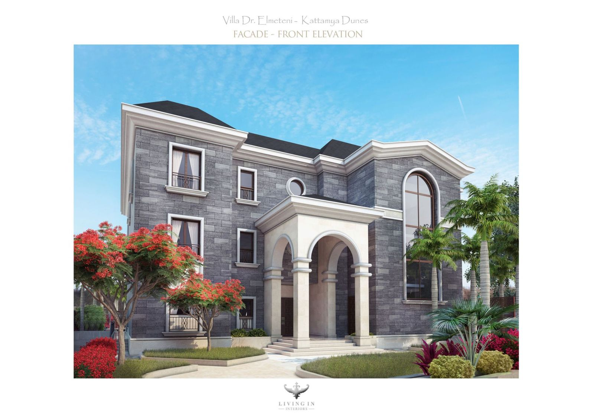

Katameya Dunes Villas
Housing development · Katameya, New Cairo, Egypt
Villa designs for Katameya Dunes in New Cairo, including facade renders.
Partners
PUD
Client
More from Katameya
 Heliopark Concept MasterplanNew Cairo · 2021
Heliopark Concept MasterplanNew Cairo · 2021 One Million Affordable Housing Units: Minya Land-Use PlanMinya · 2014
One Million Affordable Housing Units: Minya Land-Use PlanMinya · 2014 The Royal OasisSheikh Zayed City · 2001
The Royal OasisSheikh Zayed City · 2001 Organ Transplant Centre, Nasser Institute for Research and TreatmentGreater Cairo
Organ Transplant Centre, Nasser Institute for Research and TreatmentGreater Cairo Green Egypt PackhouseGiza
Green Egypt PackhouseGiza Fragrance Factory (Greiss), 6th of October City6th of October City
Fragrance Factory (Greiss), 6th of October City6th of October City